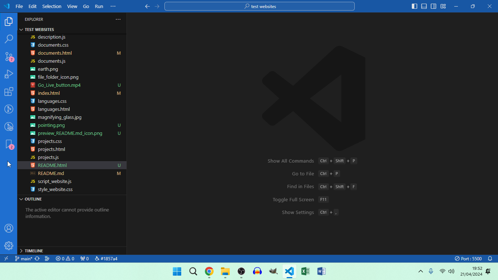
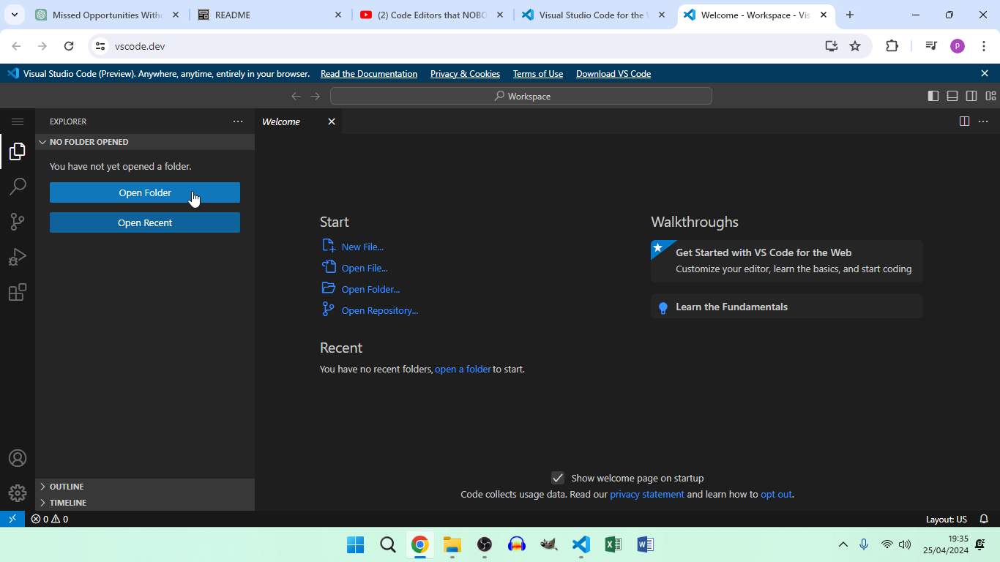
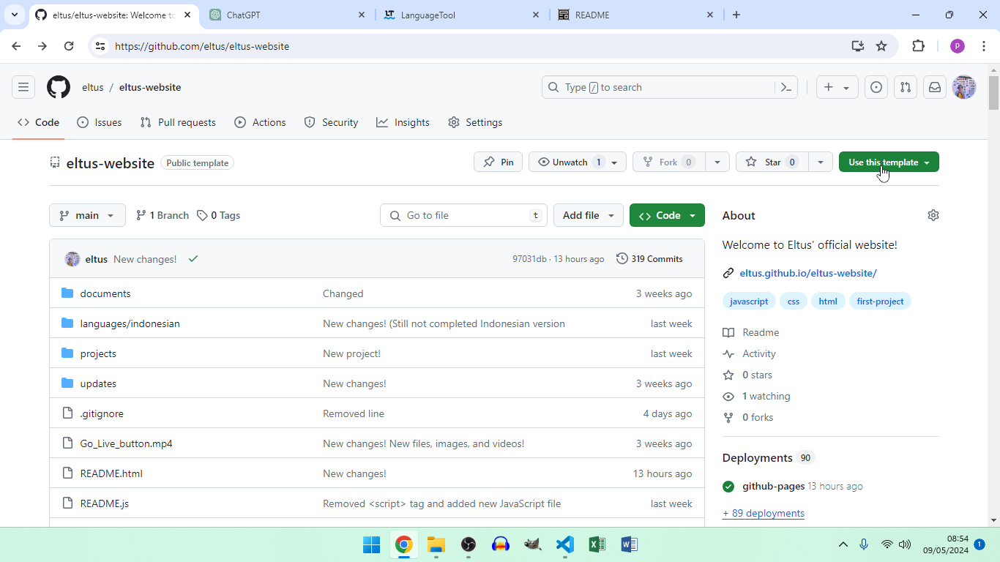
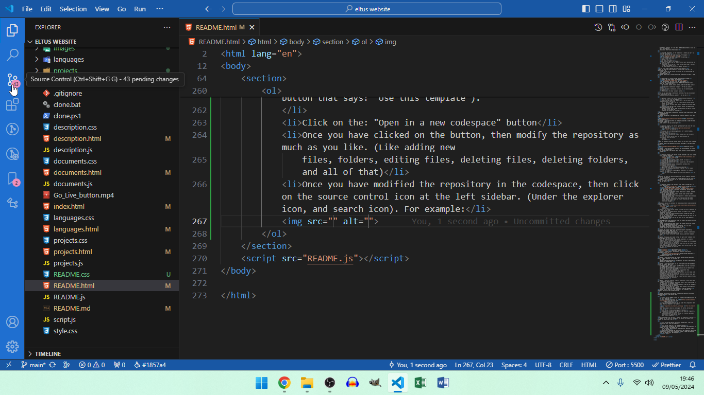

Update: I have just realized that you can just clone the repository, and if you don't know, follow these steps:
- Open CMD (A.K.A Command prompt)
- And type in "git clone" with the repository URL
- Then click enter.
git clone
And now, you have the repository on your computer, and since this is just a clone of the repository, so you can customize this clone repository as you like. Since it is not connected to the original repository. And btw here's the full git clone command:
git clone https://github.com/eltus/eltus-website
Copy this command to CMD, PowerShell, or the terminal, and click enter.
Warning!: Please use this command on CMD, PowerShell, or the terminal on a folder, or else, the repository will be cloned to the system32, or the current user folder you are using inside the users folder. Because CMD and PowerShell set the default folder as your current user folder you are using inside the users folder, or the system32 folder depending on opening CMD, or PowerShell, normally, or as an admin (A.K.A administrator). So if you wan't to clone this repository, then follow these steps:
- Open CMD, PowerShell, or the terminal on a folder you wan't to clone the repository
- Go to the top of the folder location, for example:
- Click it with your mouse
- Type in "CMD"
- And then, click enter.
- Copy this command from the "Update: I have just realized that you can just clone the repository, and if you don't know, follow these steps:" section, or copy this command: (it's the same command from the first "Update" section)

In this example, my mouse is pointing at something.
Now, this will open a CMD window
git clone https://github.com/eltus/eltus-website
Now, you have the cloned repository on the folder, you wan't the repository to be cloned, instead of the current user folder you are using inside the users folder, or the system32 folder.
Update: Here's how to install the vscode extensions from part 1, and 3!
- Open vscode, or install vscode if you haven't already
- Look to the left sidebar, for example: 
- Click the 4 grouped squares icon (A.K.A the extensions icon), under the 4 other icons (A.K.A the explorer, search, source control, and run and debug icons).
- Search those 12 extensions from part 3 of "How to install" section
- Click on those 12 extensions. (Or 1 if you are searching them one-by-one)
- Then click on the blue "install" button.
In this example, my mouse is on the left sidebar.
And now you have those 12 extensions installed. You can also install those 12 extensions on the vscode extension marketplace, and here's how you do it:
- Open your browser, and search "vscode extension marketplace"
- Click the first link that appeared
- Repeat the same steps from "Update: Here's how to install the vscode extensions from part 1, and 3!" section. (Step 4, 5, and 6, but the blue install button becomes the big green install button! The only thing that is changed are the size, and color)
- When you click the big green "install" button, the website says that the extension will be opened on vscode, but it needs your permission to open it, click yes, then it will open the extension and install it (I think)
And now, you have those 12 extensions installed from vscode itself, and the vscode extension marketplace.
Update: My website is now deployed! To access my website, click this link:
Eltus' official website!
Update: I just realized that you need git installed in order for the "git clone" command to work, so here's how you install git:
- Open your browser, and search, "git download" and click the first link that appeared, or click this link: Git download
- Pick your OS (A.K.A Operating System). (It's either Windows, macOS, or Linux)
- Double click the installer
- Customize the installation as much as you like. (Not the entire installer tbh)
- Click the install button, once you have customize the installation. (Not the entire installer tbh, again)
Now, you have git installed, and be able to use the "git clone" command.
Update: Here's the Indonesian version of this page, if you don't know english:
Update: I just realized that if you're new to programming, or do not know vscode, or do not know how to use vscode, then follow these steps on how to install and use vscode:
- Open your browser, and search, "vscode download", and click on the first link that appeared, or just click this link: vscode download
- Pick your OS. (It's either Windows, macOS, or linux)
- Click on the installer file
- Customize the installation as much as you like. (Not the entire installation tbh)
- Then click install button, once you have customize the installation. (Not the entire installation tbh, again)
- Open vscode once the installation was completed
- Install the recommended extensions from the, "Part 2: Vscode extensions" section
- Clone the repository by opening CMD, PowerShell, or vscode's terminal, and type in:
git clone https://github.com/eltus/eltus-websiteand enter.
And now, you have the repository and vscode on your computer, and you can use the recommended vscode extensions to customize the cloned repository as you like.
Update: I just realized that you can just use the browser/online version of vscode, and here's how you do it:
- Open your browser, and copy this link: https://vscode.dev/, or click this link: vscode.dev
- Click on the "Open folder" button, for example: 
- Once you have clicked that button, then select a folder, and the website will send a message saying: "vscode.dev will be able to view files in New folder". Replace "New folder" with your actual folder name, or the repository's folder name (once you have cloned it ofc), and click view files, then it will say: "Do you trust the authors of this folder?". Click yes, but it will also ask you to save changes to the folder, so click, Save changes
In this image, my mouse is pointing at something, and you must click it with your mouse.
Now you'll be able to customize the repository without vscode installed on your computer. And check more info on the vscode web documentation.
Warning!: The browser/online version of vscode is still at preview, so there might be some bugs, and glitches in the browser/online version of vscode, so it's highly recommended installing vscode, but once the browser/online version of vscode has moved to it's full release, then you can use the browser/online version of vscode, but you can still use it ofc, but there might be some bugs, and glitches, but you can still use it, even though it's still in preview.
Second Warning!: Some extensions might not support the browser version of vscode, so it is recommended to install vscode, or use extensions that support the browser version of vscode, but the recommended extensions does not support the browser version of vscode yet, so it is still recommended installing vscode, or just use the browser version of vscode without extensions.
Update: The browser version of vscode now supports programming languages! For example, HTML, CSS, and JavaScript. Including emmet too! And prettier, GitLens, vscode-icons, and JavaScript (ES6) code snippets now support the browser version of vscode! Peacock, and Better Comments too!
Update: If you guys don't want to type the "git clone" command, even though you guys can just copy, and paste the command, and put it on to CMD, PowerShell, or vscode's terminal. Well, if you guys don't wan't to do all that, then here's the download for the command, but the command will be inside a batch, or PowerShell script, so double-click the script, or right-click on the script, then click "Open" to open the script. Btw here's the download, and make sure to pick which version that you like the most. (I recommend the batch/CMD version):
Warning!: Please enable, "Ask where to save each file before downloading" option in Chrome settings downloads before downloading the Batch/CMD, or PowerShell scripts.
Update: I just realized that the link to Chrome settings downloads doesn't work on websites, so just type in the link: chrome://settings/downloads in your browser, and turn on the setting that I just talked about.
Update: I just realized that you can just right-click the PowerShell script, and select, "Run with PowerShell" option, then it will open PowerShell, but the script will run on PowerShell, but I still recommended the batch/CMD version because you can just double-click the script, then it will open a CMD window, but the script is running, and is way better than right-clicking on the PowerShell script, and selecting, "Run with PowerShell", but PowerShell is still being used as the default terminal in vscode, so PowerShell is good, and you can create PowerShell modules using .ps1 files, and when powered with the PowerShell vscode extension, you can create PowerShell modules faster, than without using the PowerShell vscode extension.
Update: I have just enabled, "template repository"! Which means, you can create a new repository, or codespace using the template repository, then it will create a copy of the repository, or codespace on your GitHub account, and you can publish the branch from the new codespace, you just created using the template repository, and the best part, is that those copies of the repository will not be connected to the original repository. Including the published branch from the codespace!
Update: It was, "Open in a new codespace", not creating a new codespace. Sorry for the misunderstanding.
Update: If you don't know how to create a new repository using the template repository, then follow these steps:
- Sign-in to your GitHub account, or create a new GitHub account, if you don't have one
- Go to my GitHub repository, or click this link to my GitHub repository
- Click on the green button at the top right of my repository that says: "Use this template", for example: 
- Click on the: "Create a new repository" button
- Once you have clicked on that button, then name your repository, add a description (optional), make the repository private, or public, include all branches (optional), then click on the green button that says: "Create repository".
In this image my mouse is pointing at the button, and you must click it.
And there you go! Now, you have a copy of the repository on GitHub!
Update: You can also use codespaces, and publish the branch on to GitHub, and here's how to do it:
- Click on the same button that I just talked about. (The green button that says: "Use this template").
- Click on the: "Open in a new codespace" button
- Once you have clicked on the button, then modify the repository as much as you like. (Like adding new files, folders, editing files, deleting files, deleting folders, and all of that)
- Once you have modified the repository in the codespace, then click on the source control icon at the left sidebar. (Under the explorer icon, and search icon). For example: 
- Once you have clicked the source control icon, then click on the: "Publish branch" button, which publish the branch on to GitHub.
In this example, my mouse is pointing at the source control icon, and you must click it.
And now, you have a copy of the repository on GitHub! As well as the branches you have published.
Update: When you are done installing vscode on to your computer, then click on the "Open folder" button, then select the cloned repository folder. (A.K.A the eltus-website folder, and the "Open folder" button is the same button from the browser version of vscode).
Update: Here are all controls for accessing the activity bar/left sidebar, and more!
- Accessing extensions = Ctrl+Shift+X
- Opening a folder = Ctrl+O
- Accessing source control = Ctrl+Shift+G
Update: I will add more controls when I add new things from vscode to this. (Like search, explorer, and more).
Update: Here are all the meanings of these words (you need to put your mouse cursor on the words with the underline to see the meanings of these words, and you must wait):
- OFC
- TBH
- EG
Update: I will add more meanings when I have added new meanings on this page.
Update: All the instructions about opening CMD, and all of that only works on Windows judging by the start menu icon that is in every single image including videos! If you are on macOS or Linux, then follow these steps:
Note: All of these instructions are just alternatives of the original instructions. (A.K.A the Windows version).
macOS version:
- On your macOS computer, open the terminal from Applications > Utilities.
- On the terminal, type: "cd your/folder". And replace "your/folder" with your actual folder location/address
- Type in the same command to clone the repository. (A.K.A
git clone https://github.com/eltus/eltus-website).
Linux version:
- Use the built-in terminal app on Ubuntu, Debian, or Konsole on KDE.
- In the terminal, type the cd command with your folder address (like from the macOS instructions)
- Use the same command to clone the repository from the macOS instructions.
And there you go! Now you have my repository cloned on both Linux and macOS!
I have just enabled releases on my website's GitHub repository! This means, you can download all versions of
my website's source code, and all of the versions will be stored on a ZIP file, and make sure to extract the
ZIP file in order to modify a new, or old version of my website, and upload it to GitHub by initializing the
old, or new version of my website, and you need to use the: git init command. And this command
initialize the new, or old version of my website, and if you want to upload the modified version of my
website on to GitHub, then you will need a account on both Git, and GitHub, and to create an account on
GitHub, just go to github.com and click on the button that
says: "sign up", or "sign in" if you already have a GitHub account, then fill in your password, email, and
username, and you are done, now connect vscode with GitHub, so it will send the changes from vscode to
GitHub, and to do that, you need to connect Git with GitHub in order for vscode to send the updates from
vscode, and here are the steps on how to upload your modified version of my website on to GitHub:
- Go to github.com
- Then create an account by clicking the button that says: "sign up", or if you have a GitHub account, then click the button that says: "sign-in", or "login".
- Then connect vscode with GitHub, and connect Git with GitHub.
- Initialize the old, or new version of my website that you have downloaded by typing the command:
git init, or initialize it by going into vscode, and clicking the source control icon, then click the button that says: "initialize this folder". - Create an account for Git by typing these commands:
git config --global user.name "[Your Usernamereplace "[Your Username]" with your actual username.git config --global user.email "[Your Email Address]"replace "[Your Email Address]" with your actual email address. - Open CMD, or the vscode terminal, then type in:
git add index.html - Open CMD, or the vscode terminal, and run the command:
git commit -m "Your commit message"replace "Your commit message" with your actual commit message (eg, INITIAL COMMIT MESSAGE). - Open CMD, or the vscode terminal,
and type in:
git remote add origin Remote_URLreplace "Remote_URL" with the correct URL to your GitHub repository in order to connect your modified version of my website from your computer on to GitHub. - Open CMD, or the vscode terminal, and type in:
git push origin branch_namereplace "branch_name" with your actual branch name. - If you don't want to push your modified version of my website using the CLI, then click the source control icon, then click on the button that says: "Commit". Or click the checkmark icon which is this:
- Once you have commit your modified, or new files, and folders, then add your GitHub repository by opening GITLENS: REMOTES, then click the plus icon to add a remote, then choose your GitHub repository
- Once you have add your GitHub repository/remote repository, then click the button that says: "Sync changes", then it will push the changes you have made on to GitHub
- Use the .gitignore file to ignore the files, and folders you don't want to add, or commit
- Open your GitHub repository, and see if the changes you have made is now on GitHub.

And there you go! Now, your modified version of my website is now on GitHub without cloning it on your computer. (But I will still recommend cloning the repository).